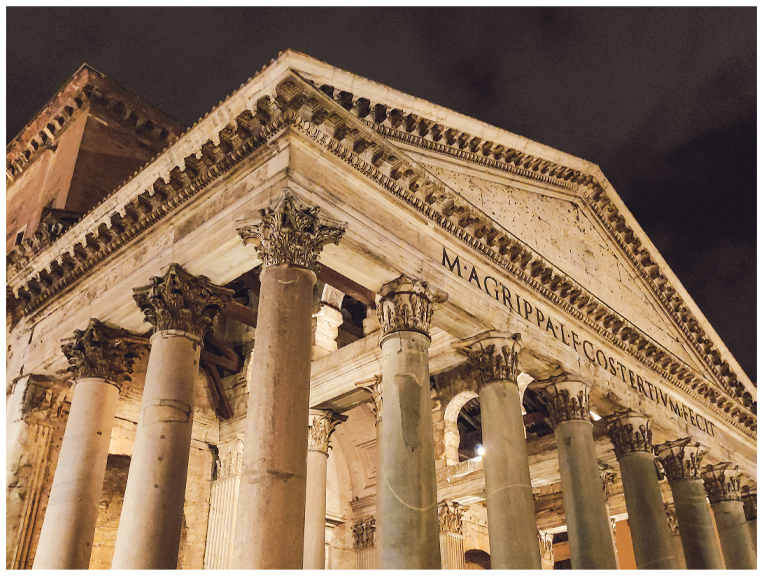
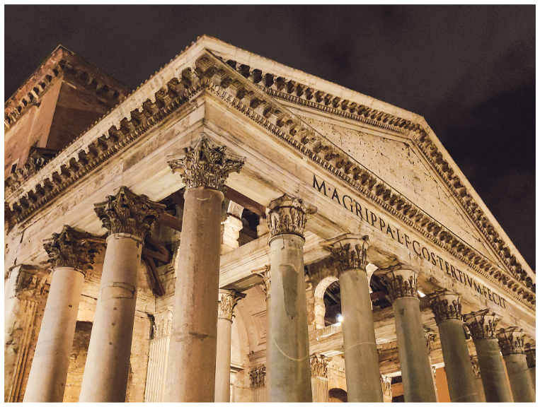

HOW IT WAS BUILT
The Pantheon standing today is the third version of the structure, rebuilt by Emperor Hadrian after two earlier temples burned down. Although Hadrian designed much of it, he kept the original inscription honoring Agrippa, the first builder.
The Romans constructed the Pantheon using innovative engineering techniques, including progressively lighter concrete toward the top of the dome, hidden support chambers within the walls, and enormous granite columns transported from Egypt.
The building process used marble, stone, brick, and specialized concrete mixtures.
Granite columns weigh nearly 60 tons each, while the dome’s interior coffers helped reduce weight and increase stability.
Its open oculus was designed not just for illumination but as a symbolic eye to the heavens.